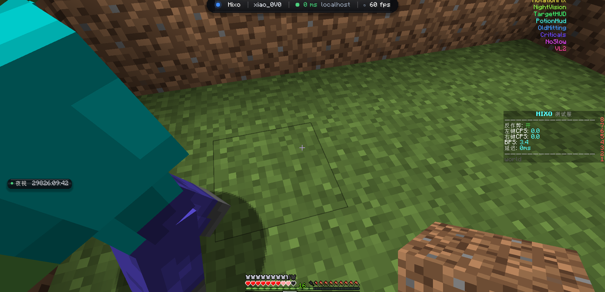

◈
预测级移动修正
按帧预测轨迹后再修正朝向，静默转头不改变镜头与移动方向，服务端看到的旋转与物理一致。
每一个模块都按服务端最终的判定逻辑反推实现，而不是靠试参数。
按帧预测轨迹后再修正朝向，静默转头不改变镜头与移动方向，服务端看到的旋转与物理一致。
根据服务端 tick 与你当前延迟动态决定出手时机，而不是固定 CPS 的机械节奏。
VL2 支持 Buffer / Jump Reset 等多档模式，减速则用预补偿注入，而不是事后改输入。
ESP / TargetHUD / 灵动岛全部走原生绘制管线，纹理运行时注册，不依赖任何资源包。
状态变化实时上岛：击退处置、搭路、目标锁定，一眼看清现在在发生什么。
不写 mods、不改版本目录、不动客户端的任何文件，注入器一个 exe 全部搞定。
全部模块都可在游戏内热开关与调参，配置自动保存。
HUD 全部走游戏内原生渲染管线，不开任何悬浮覆盖层。

@Inject(method = "sendPacket")
public static void onSendPacket(...) {
// 出站包统一处理：顺序可控
doRotationFix(packet);
doNoSlow(packet);
doVelocity(packet);
}
下载注入器，双击运行，选择游戏进程即可。首次运行会生成独立配置目录，不污染原版。
Windows 10 / 11 · 64 位 · 需要 Java 21 运行环境
每一次改动都记录在案，历史版本随时可回滚。